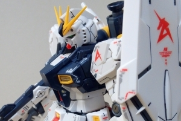

ガンプラとは「機動戦士ガンダム」のシリーズに登場するモビルスーツ、モビルアーマーと呼ばれるロボットや戦艦などを立体化したプラモデルのことです。

0083
STARDUST
MEMORY
OVAである『機動戦士ガンダム0080 ポケットの中の戦争』の商業的成功を受けて製作された『機動戦士ガンダム』の外伝的OVAの一つ。

逆襲のシャア
ガンダムシリーズ初のテレビアニメの再編集ではない劇場オリジナル作品として制作され、アムロ・レイとシャア・アズナブルの最後の戦いを描く。

ベルトーチカ
チルドレン
ガンダムシリーズ初のテレビアニメの再編集ではない劇場オリジナル作品として制作され、アムロ・レイとシャア・アズナブルの最後の戦いを描く。

機動戦士
ガンダムF91
本作は『機動戦士ガンダム』の映画化10周年を記念して制作された劇場用オリジナル作品である。サンライズとしては劇場用単独作として作った2作目のガンダム作品となる。